Disturbance analysis for Gateway
Loads GatewaySimple.mat. Can choose between sun pointing or the orientation which minimizes the gravity gradient disturbance torque. You can compare the results to the full model, Gateway.mat, which will run much, much more slowly
See also: Constant, DrawSCPlanPlugIn, Disturbances, Date2JD, Period, RVOrbGen, PltOrbit, SunV1, UMinGG, Q2Mat, U2Q, Figui
Contents
%-------------------------------------------------------------------------- % Copyright (c) 2022 Princeton Satellite Systems, Inc. % All rights reserved. % Since 2023.1 %-------------------------------------------------------------------------- % Plot sunPointing = false; % Constants mu = Constant('mu moon'); rM = Constant('equatorial radius moon'); % Gateway rA = 70000; rP = 3000; [a, e] = RPRA2AE( rP, rA ); el = [a pi/2 0 0 e 0]; % Load the model and display it % g = load('Gateway.mat'); % full model with >80,000 faces g = load('GatewaySimple.mat'); % simple model with <500 faces % The body inertia is used for gravity gradient inertia = [1.6406e+06 -8.6764e+04 -4.7583e+03;... -8.6764e+04 9.9031e+05 -8.5474e+02;... -4.7583e+03 -8.5474e+02 1.8093e+06]; cM = [ -3.1182e-04; 4.2778e-05; -1.5026e-05]; g.component(1).mass = struct('mass',40000,'inertia',inertia,'cM',cM); g.body(1).mass = g.component(1).mass; DrawSCPlanPlugIn(g);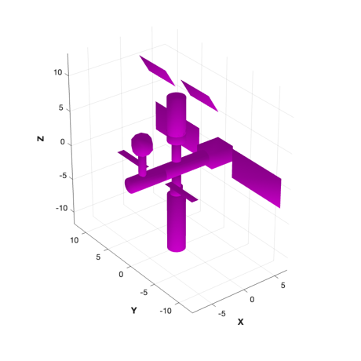
Perform the disturbance analysis
e = Disturbances( 'defaults' ); % Script control nOrbits = 4; e.computeAero = false; e.computeMag = false; e.computePR = false; nSamp = 400; jD0 = Date2JD([2024 2 2]); % Orbit period = Period( a, mu ); t = linspace(0,nOrbits*period,nSamp); e.tSamp = t(2); [e.r,e.v] = RVOrbGen(el,t,[],mu); e.mu = mu; e.planetRadius = 1738; e.units = 'm'; PltOrbit( el, jD0, [], 'moon' ); % Generate the transformation matrices jD = jD0 + t/86400; uSun = SunV1(jD); if( sunPointing ) for k = 1:length(jD) g.body(1).bHinge(k).b = Q2Mat(U2Q(uSun(:,k),[1;0;0]))'; end else u = UMinGG(inertia ); for k = 1:length(jD) g.body(1).bHinge(k).b = Q2Mat(U2Q(Unit(e.r(:,k)),u))'; end end % Initialize the disturbance model hD = Disturbances( 'init', g, e ); % Run the analysis Disturbances( 'run', g, e, hD ); Figui; %-------------------------------------- % $Id: 7e5ae5653a7dfcaa422c904a95229f87d59ed3d0 $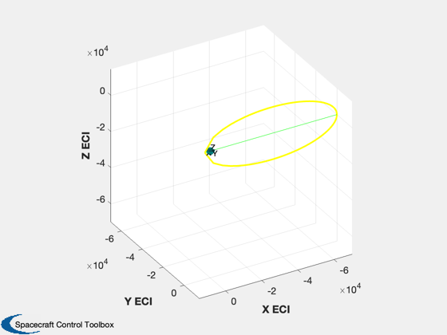 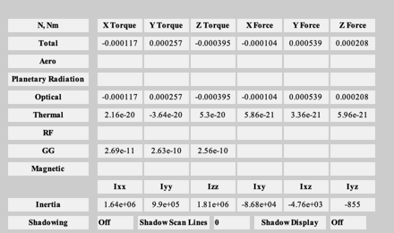 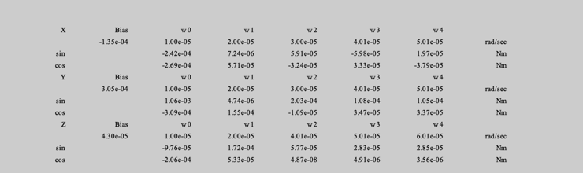
 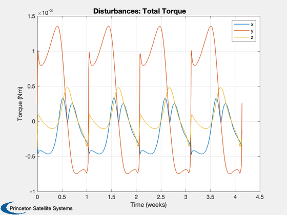 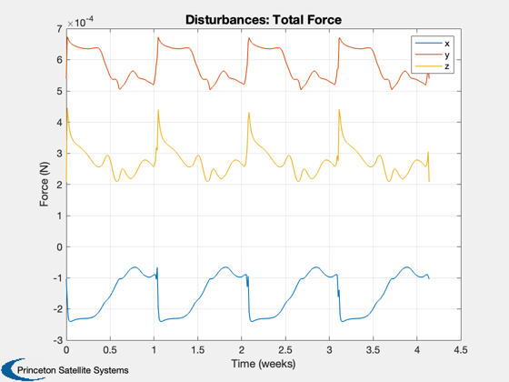 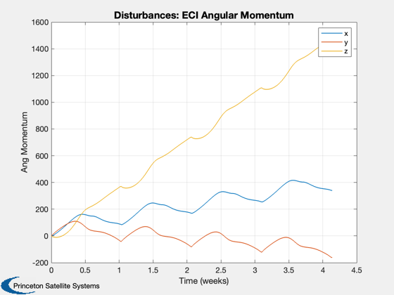 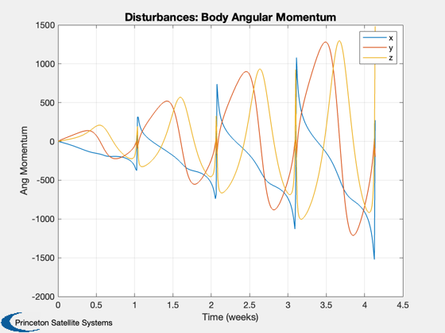 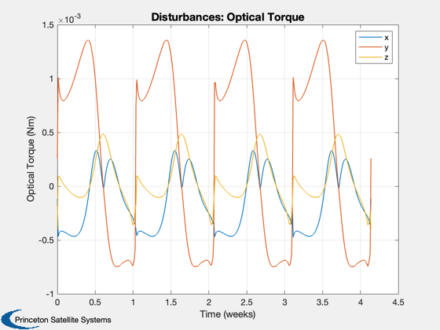 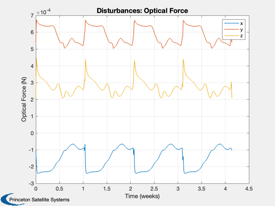 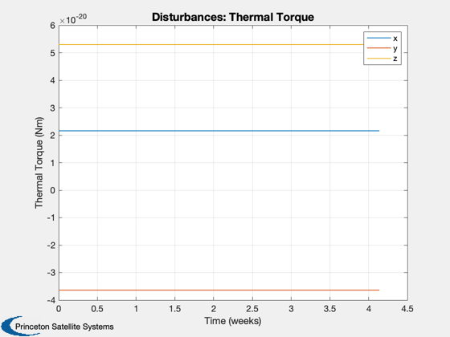 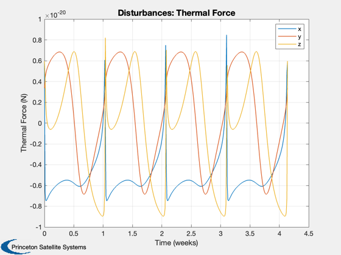 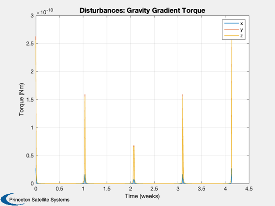 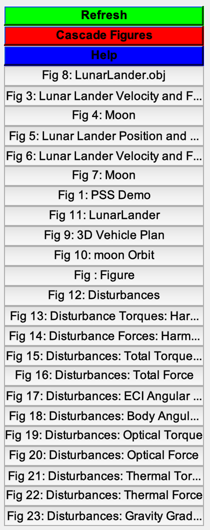
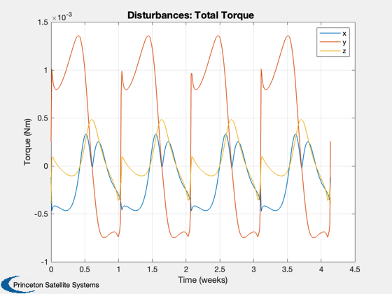 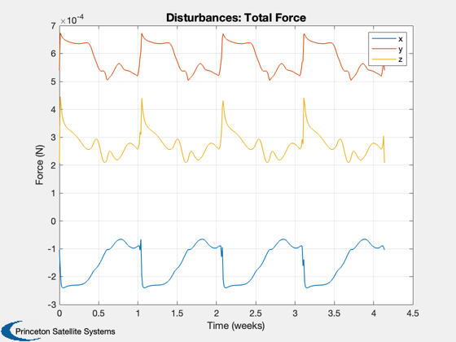 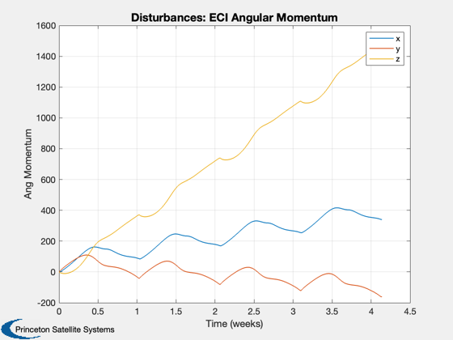 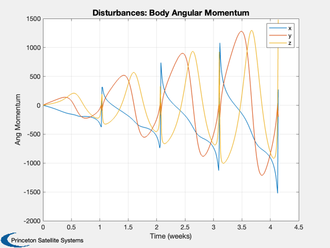 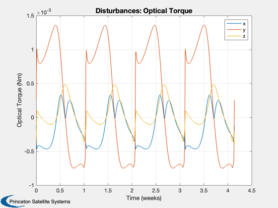 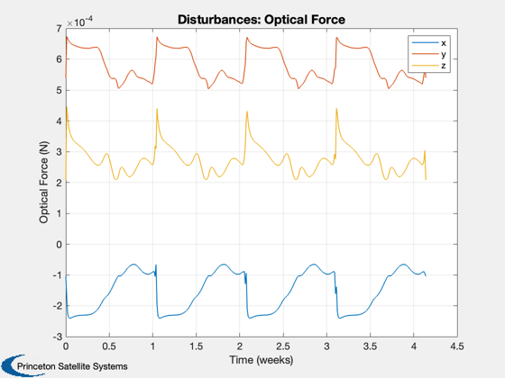 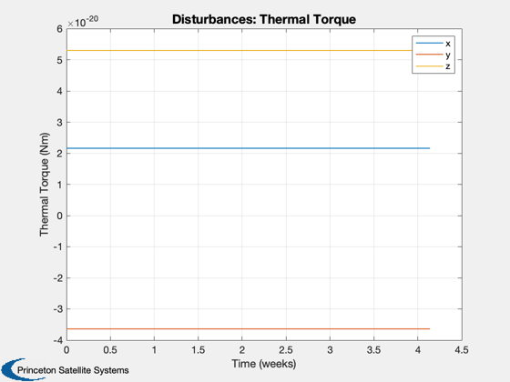 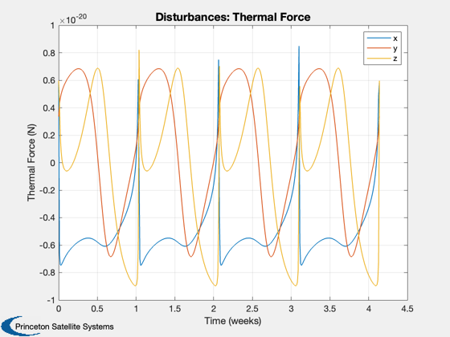 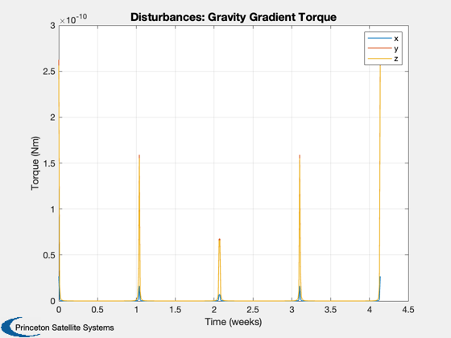 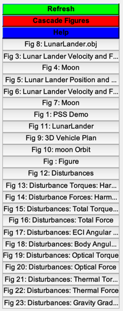